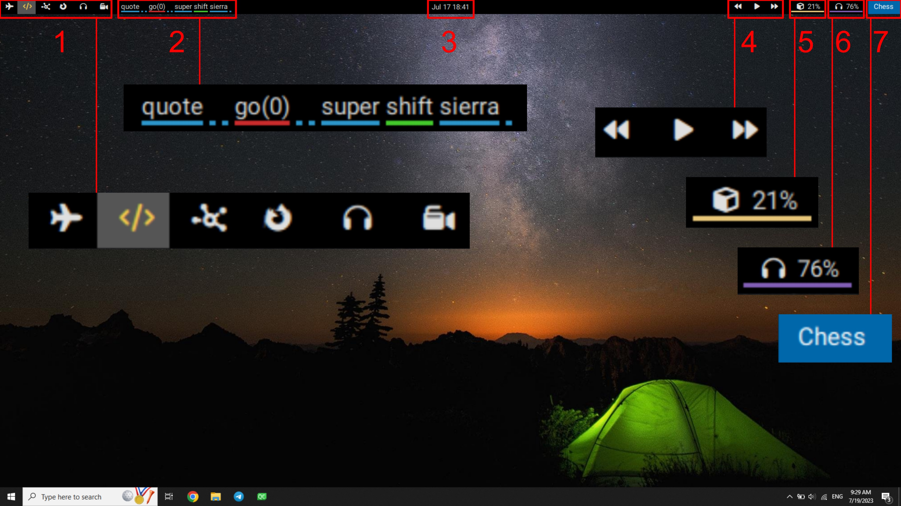

Mom is like PolyBar, it manages different workspace, shows system status and BaTool detection output. Mom is named after the fact that it will spawn all the child applications (BaTool, Chess, Rebound). Mom reads BaTool detection from Benjamin/Mom/Labels with PolyBar Application format.
Mom has several widgets:
- Workspaces: you can switch between 6 workspaces showed with different icons.
- Word detection from
BaToolandENN. - Date and time
- Music widget: Used to pause/play music. Also go to next/previous music.
- CPU usage
- Speaker: By clicking on this icon you can alter between speaker and headphone. By scrolling you can increase/decrease the volume.
- Focused application
- System status: Shows if system is running or sleeping or halted.

Color of detected word is set by ENN application and sorted from best detection accuracy to worst:
- Best
- Good
- Lowest Confidence
- Wrong